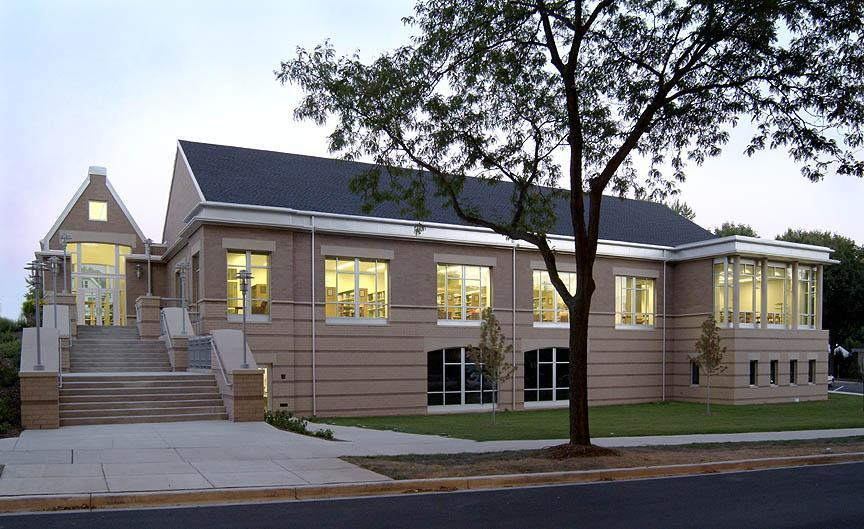

Hello, and welcome to the walking tour of Green Stormwater Infrastructure practices in the Village of Shorewood, located just north of the city of Milwaukee. You should be standing in the Shorewood Public Library atrium located at 3920 N. Murray Ave. Refer to Image #1 and #2 of the Starting Point image carousel to confirm you are in the correct location.
The Village of Shorewood is situated between the Milwaukee River on the west and Lake Michigan on the east, with the Shorewood Public Library sitting at the midpoint between these watery boundaries. Thus, the Shorewood Public Library serves as a vibrant community hub, offering resources for learning, connection, and exploration. The library is a cornerstone of the Shorewood community, and therefore is a perfect place to start our tour of the local Green Stormwater Infrastructure!
Now, let’s dive into the purpose of our tour today. Shorewood’s location between the Milwaukee River and Lake Michigan holds many commercial, recreational, and aesthetic advantages, but also presents a risk: flooding from increasingly frequent and severe storms due to changing climates. Many cities and towns have implemented large underground storm sewer systems and other massive utility projects to move stormwater, or rain from heavy storms that produce flooding. Such large construction projects are described as Gray Stormwater Infrastructure due to their reliance on concrete and other unnatural building materials.
In contrast, the stops on this tour highlight the innovative “green”, or “environment-friendly” practices that Shorewood has implemented to manage stormwater and to protect it from storms, but also that hold additional benefits to the local community and environment. This collection of practices, known as Green Stormwater Infrastructure, utilize natural solutions to capture and regulate stormwater right where it falls, alleviating reliance on Gray Stormwater Infrastructure. By doing so, Green Stormwater Infrastructure plays a crucial role in contributing to a more resilient and sustainable Shorewood community.
Today, you will be using an interactive map to follow a green route that will navigate you to roughly ten stops along the tour. Let’s talk a bit about how the interactive map works. If you have your GPS location enabled in your browser, you should see a blue circle on the map. That’s you! You can refer to your current location on the map whenever you are unsure if you are still on the tour route. There also is a static map providing an overview of the entire tour under the “About” tab.
As you follow the green route on the map, information will appear on your phone for each stop. The green circles represent tour stops at different practices of green stormwater infrastructure, and provide a chance to take a short break from walking during the tour. The green stops contain an audio narration of the Green Stormwater Infrastructure practice at the stop and an image carousel with several images, diagrams, or maps to provide additional context about the stop. You should always stop walking when viewing an image for safety! Use the first image in the carousel at each stop to confirm that you are correctly looking at the green stormwater practice, as sometimes they blend into the local environment…intentionally so to add to the aesthetic beauty of the local community!
The white circles give you additional audio context about Green Stormwater Infrastructure as you walk between stops, and thus you can continue to walk during the white circle audio playback if you feel comfortable doing so. When you enter a circle, green or white, the audio will play automatically, describing the stop and providing directions along the route. Please listen to the full audio clip before you enter the next circle, and you can replay sections of the audio to relate the narration to the images.
If you prefer to read instead of listen to the audio, you can stop the audio and read the text information on your screen when reach each circle.
The tour should take approximately 2 hours to complete. The route mostly follows paved sidewalks but includes a stairwell and a dirt path along the Milwaukee River. So, I hope you dressed for the season and wearing appropriate footwear! For those who wish to avoid stairs, an accessible route is available near the Oakleaf Trail Bridge on Capitol Drive. This accessible path is mostly paved but includes a 100-foot section of unpaved, slightly sloped trail made of dirt and wood chips. The accessible route is marked with a dashed green route on the map, and I will alert you when you reach the fork so that you can follow your preferred pathway.
Before starting the tour, please check your device settings to ensure that GPS location services are enabled on both your mobile device and your web browser individually. Please note that you MUST keep your browser screen open throughout the tour to enable automatic audio playback. Therefore, try to minimize use of other apps on your phone during the tour. Make sure your phone is fully charged or bring along an external battery pack for uninterrupted access to the tour. For the best experience, use headphones to listen to the audio. Most importantly, always watch your steps while walking, especially when crossing streets!
Now, click the “Start Tour” button and walk towards the first green circle on the map. If you are facing the library entrance from the atrium, use the door on your left to exit the building. Begin the tour by exploring our first Green Stormwater Infrastructure feature at the northeast corner of the library.